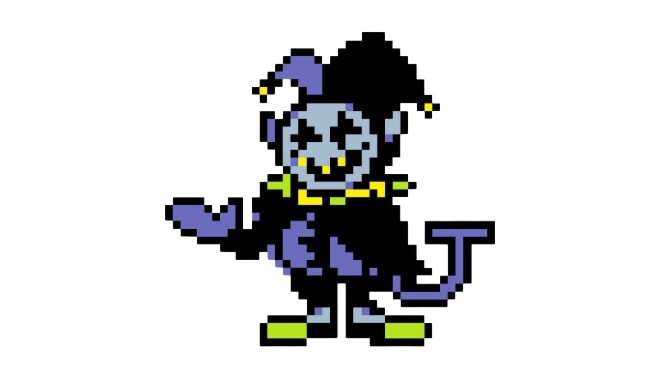

Jevil is a short, pudgy imp with a round gray face, elven ears, clown-like eyes with small yellow pupils and black sclerae, and a large smiling mouth with yellow, sharp teeth. He has a long, purple tongue which can be seen either when he laughs, or during some of his attacks. He has a purple tail shaped like a capital letter J. He is dressed in a purple shirt, black trousers, a black cape, green slippers, black socks, purple mittens, and a lime green and yellow jester's collar. He wears a purple and black harlequin jester hat with two small yellow bells. His head appears to be connected to his body via a coil spring (akin to that found in a jack-in-the-box), which is only exposed when attacked.
Kris is a human teenager with an amber skin tone and messy, shoulder-length dark maroon hair. They wear a long-sleeve lime shirt with one horizontal yellow stripe, and nondescript pants and shoes. One of Kris's distinct traits is that their long bangs cast a shadow that hides the upper half of their face. In the brief moments they tear the SOUL out of their body, their red eyes can glow in the dark. One of their crimson eyes is also visible for a few frames when they descend into a Dark World.
Tenna appears as a 3D-rendered humanoid figure with an old TV for a head, lacking any facial features aside from a wide, often-grinning mouth and a long, pointed nose. His attire consists of a flashy red suit with twin coattails, a long yellow tie, black pants, large cartoony white gloves, and bright yellow dress shoes. He is taller than both King and Queen.
While the Knight's appearance seems amorphous in nature, their "resting" form possesses long limbs, pointed legs, jagged shoulder protrusions, and what appear to be holes in their hands. When first encountered, they are slumped over, "leaking" something from their helmet, and have a single, circular eye hole. When screaming, they have a monstrous, deer-like head and an open rib cage, featuring an eye in the center. When fleeing and kidnapping Undyne, they assume a large antlered bird-like form. They also often transform into a spinning ball when quickly moving between locations.
Watercooler is a Darkner miniboss that appears throughout Chapter 3. It can be first encountered in the reward room for C-class players of Tenna's show. Watercoolers also show up in Chapter 4's Dark World. However, you cannot fight them in their Watercooler state, as Mizzles will emerge from the Watercooler for the battle, instead of the Watercooler itself. One exception exists in the form of the Miss Mizzle miniboss, whose first phase is similar to the Watercooler battle.